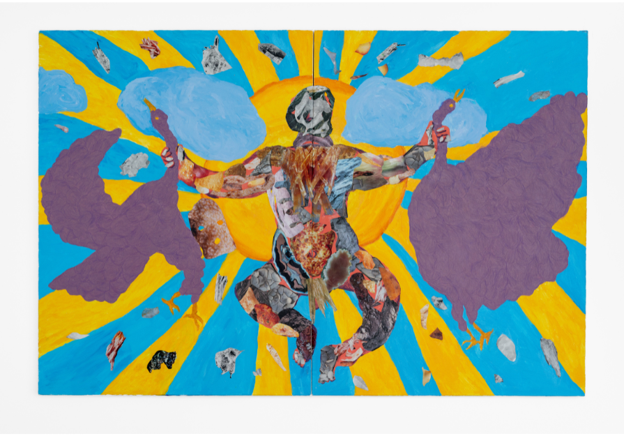

After the Flood by Alex Stark
After the Flood is a collection of works made both before and after a flood in the artist’s studio. Stark began making a new body of collages in which he began covering parts of his previous salvaged paintings. Collaging on Stark’s former damaged works becomes an act of revival, highlighting the resilience and ability of the body to adapt. The figures are ornamented and adorned in a way that is expressive of the relationship to these divine forms. The collaged imagery is photographic, combining and recontextualizing images of food, animals, architecture and nature into Stark’s own narrative, based around the body. These unconventional figures in crowded scenes form a sensory relationship with the viewer.
As a disabled queer artist, Stark’s work contemplates his own body and the manifestation and idea of belonging in a place. Physicality is central to his work through play with different materials that integrate drawing, painting and collage with an emphasis on visible mark-making. A language and narrative is developed around figures’ natural and vulnerable state of nudity and their expressive poses that often relate to the spaces they occupy.
Alex Stark is an artist and curator working between Boulder, CO, and Chicago, IL. He received a BFA from the School of the Art Institute of Chicago in 2016. Stark’s works are an amalgamation of observed and dream-like imagery with figures that relate to the idea of self and act as an avatar or spiritual self-representation. Stark founded Rare Visions Gallery Project LLC in Boulder, CO, where he has curated six shows. In Chicago, Stark began the Voices Embodied series in which selected works focus on a relationship between disability, the body, and identity. Stark has exhibited in Chicago at LV3 Gallery, Roots and Culture Gallery, and Carrie Secrist Gallery, at Chashama Gallery in New York City, at Mindy Solomon Gallery in Miami, FL, and the Green Gallery in Milwaukee, WI. His work appears in the 2024 New American Paintings: West Issue #168, 2019 School of the Art Institute Biannual Magazine, and the 24th issue of Posit, a journal of art and literature. Stark has been interviewed on WGN-TV Chicago, WBEZ Chicago, and has spoken at Soho House Chicago, Milwaukee Institute of Art & Design, Arts of Life, NIAD, and Artist Communities Alliance.